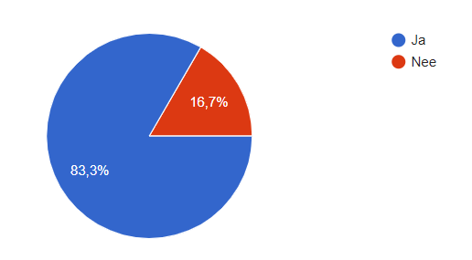

Verbeter je concentratie en presteer beter
Er voor zorgen dat studenten geen gebruik maken van social media tijdens het studeren om zo beter te presteren.
Percentage mensen die afgeleid worden door social media volgens enquêtes.
Studeermodus heeft verschillende functies die kunnen helpen bij het studeren.
Geen social media en notificaties als Studeermodus is ingeschakeld.
Gemiddeld kijken we 221 keer per dag op onze telefoon, dat is om de 12 minuten.
Blijven scrollen omdat je denkt dat je belangrijke content tegen gaat komen.
Het vergeven van informatie en tips om beter te concenteren.
Na het bekijken van een melding duur het 23 minuten voordat je weer geconcentreerd bent.
Het ritme van 25 minuten studeren 5 pauze.
Een ranglijst om te kunnen zien hoe je veel je vrienden studeren.
Als je het gedrag van de student wil veranderen moet je laten zien dat andere mensen hetzelfde gedrag vertonen. De kans is groot dat zij dit kopieren.
De werking van Studeermodus in een korte video
By Corné Voorwinden